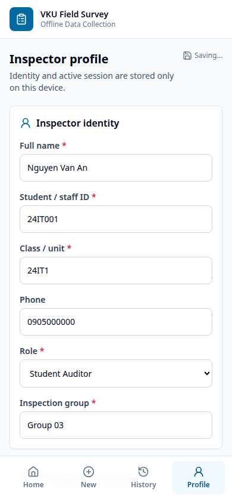
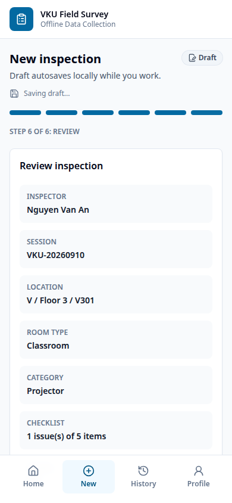
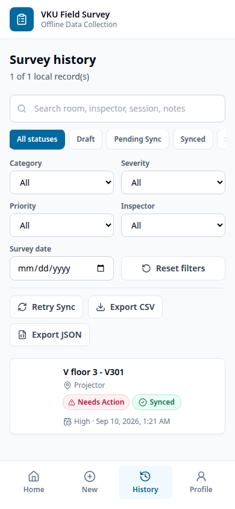
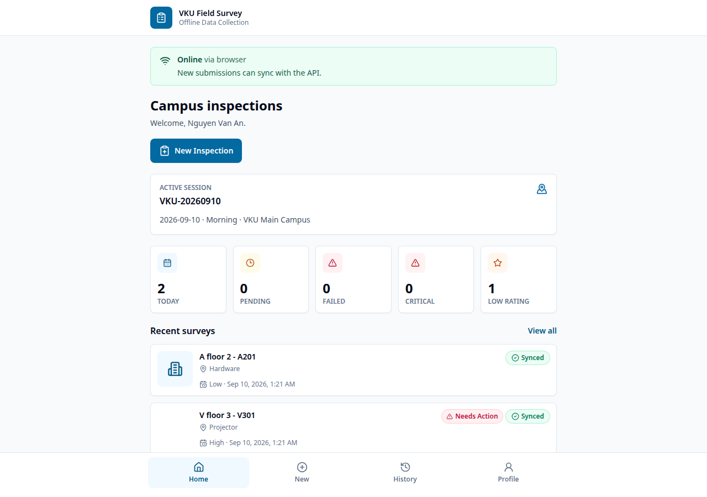

Mobile Development Mini-Project 1
Offline Data Collection PWA and Capacitor
A network-dependent inspection form can lose unfinished observations, photos and submissions. This project treats IndexedDB as the primary source of truth: it autosaves drafts, accepts submissions offline, survives refresh/restart and synchronizes queued UUID records when the API is reachable.
The professional extension adds inspector/session accountability, category checklists, issue classification, GPS evidence, dashboard metrics, detailed history and offline export while preserving the original PWA and sync requirements.
| DONE | Standalone manifest, VKU theme, 192/512 icons and app-shell precache |
| DONE | IndexedDB autosave, draft restore and schema-v1 compatibility |
| DONE | Local profile, active session and immutable survey snapshots |
| DONE | Six-step form, custom room, room type and 1-5 star rating |
| DONE | Five category-specific checklists with OK/Issue/Not Checked |
| DONE | Severity, priority, issue type, recommended action and evidence rules |
| DONE | Photo/GPS evidence with web and Capacitor implementations |
| DONE | Sequential offline queue, reconnect sync and idempotent UUID API |
| DONE | Filters, Needs Action badge, dashboard and local CSV/JSON export |
| PENDING | Final APK build/install and physical-device verification |
| PENDING | Public HTTPS deployment URL |
System Design
React, TypeScript, Vite, Tailwind, React Router, idb, Workbox and Capacitor.
Node.js, Express, nested payload validation and queued atomic JSON writes.
Each Survey includes UUID/timestamps, sync status, inspector snapshot, session snapshot, facility location, room type, category checklist, rating, severity, priority, issue type, recommended action, notes, optional Base64 photo and GPS status/evidence.
Snapshots preserve historical accountability when the local profile or
active session changes. IndexedDB version 2 adds profile
and sessions; a runtime normalizer safely reads original
version-1 survey records.
Workbox precaches HTML, CSS, JavaScript, icons and manifest data for offline boot. Browser evidence uses file input and Web Geolocation; Android uses Capacitor Camera, Network and Geolocation. GPS failure is recorded as unavailable and does not block a valid survey.
Implemented Interface



Verification And Delivery

Business rules, High/Critical photo requirement, old-schema normalization, IndexedDB profile/session persistence, immutable snapshots, queue ordering and server validation.
Profile refresh, online submit, offline Pending Sync, reconnect auto-sync, GPS capture, CSV download and service-worker offline boot.
The source code, screenshots and this 4-page report are ready locally. The web/PWA flow is stable and tested before APK work, following the required implementation order. Remaining external tasks are publishing the HTTPS PWA/public repository and building/installing the APK in an Android SDK device or emulator environment.
VKU Field Survey meets the original offline-first learning objectives and now models a credible campus inspection process. Its core guarantee remains unchanged: valid field data is saved locally first and never depends on immediate connectivity.